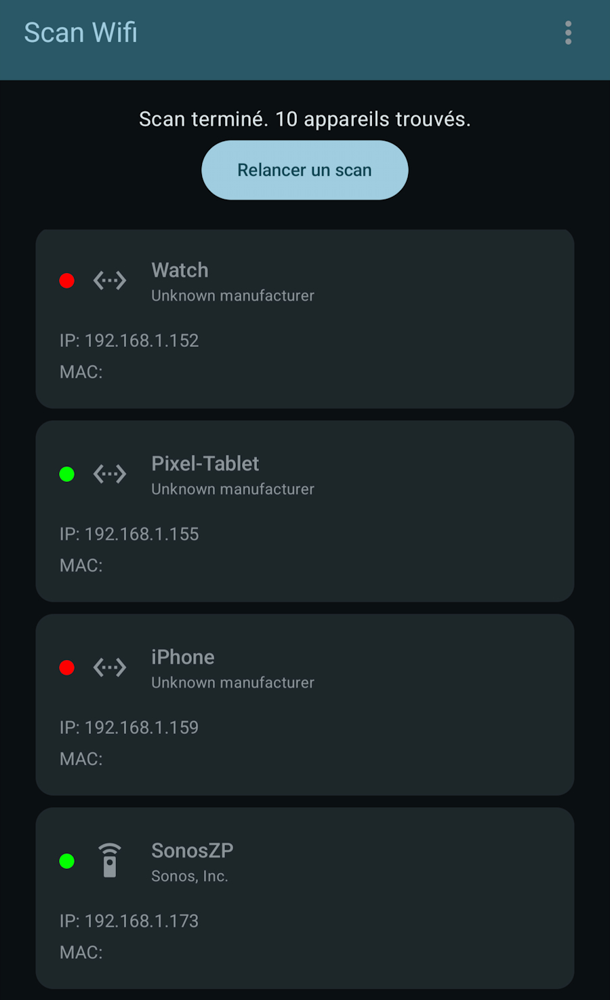

LAN Scanner (Application Android) EN COURS

Objectif du projet
Ce projet a un double objectif : d'une part, maîtriser la stack de développement Android moderne (Kotlin, Jetpack Compose, MVVM) et d'autre part, construire un outil de diagnostic réseau fondamental pour l'administration d'un futur homelab.
L'application sert de "tour de contrôle" mobile, permettant de découvrir et d'identifier les appareils connectés sur le réseau local, étape essentielle avant de gérer des serveurs, VM et conteneurs.
Architecture & Conception (MVVM)
L'application est construite sur une architecture MVVM (Modèle-Vue-ViewModel) moderne pour une séparation claire des responsabilités :
-
Vue (Jetpack Compose) : L'interface utilisateur est
entièrement bâtie avec Jetpack Compose, le toolkit déclaratif
moderne d'Android. La Vue (
MainActivity.kt) ne fait qu'afficher l'état fourni par le ViewModel et lui remonte les actions de l'utilisateur. -
ViewModel (
MainViewModel.kt) : C'est le cerveau de l'application. Il détient et gère l'état de l'UI (viamutableStateOf), gère la logique de haut niveau (ex: choisir entre le scan Freebox ou le scan générique) et survit aux changements de configuration. -
Modèle/Services : Des classes comme
FreeboxManager.ktetNetworkScanner.ktgèrent la complexité technique (appels HTTP, scan de sockets, découverte NSD) et exposent des fonctions simples au ViewModel.
La gestion de l'état (ex: FreeboxAuthState) utilise des
Sealed Classes pour créer une machine à états
propre, permettant à l'UI d'afficher distinctement un loader, une
erreur, ou un succès.
Défis Techniques et Apprentissages
Ce projet a été l'occasion de développer des compétences critiques en développement Android :
-
Programmation Asynchrone (Coroutines) :
Utilisation intensive de
viewModelScopepour lier les tâches réseau au cycle de vie du ViewModel, et deDispatchers.IOpour s'assurer que les scans lents ne bloquent jamais l'interface utilisateur. -
Consommation d'API (Ktor) : Ktor, une
bibliothèque Kotlin-first, a été utilisée pour consommer l'API de
la Freebox, gérer l'authentification (tokens de session) et
parser le JSON (avec
kotlinx.serialization). -
Découverte Réseau (NSD) : Implémentation de la
découverte de services réseau (NSD) pour trouver l'API de la
Freebox (
_fbx-api._tcp) sans connaître son adresse IP au préalable. - Scan Actif : Développement d'un scanner générique qui sonde les Sockets sur le réseau local pour trouver des appareils lorsque l'API du routeur n'est pas disponible.